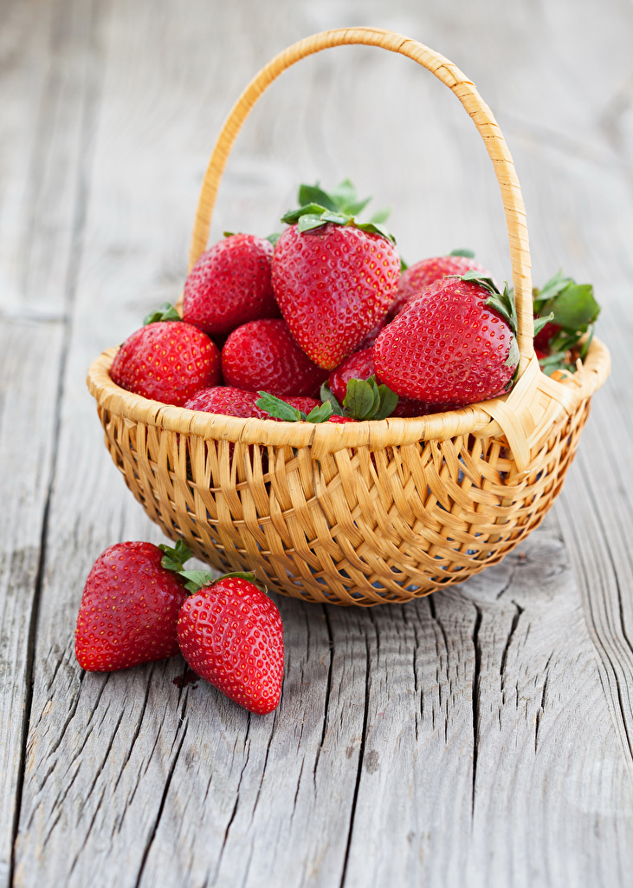

Польза клубники
Эта ягода очень хорошо влияет на работу сердечно-сосудистой системы, укрепляет иммунитет и нормализует перистальтику кишечника. Клубника также помогает при малокровии. Кроме этого, ягода действует на организм успокаивающе, выводит токисны и помогает справиться с бессонницей.Однако врачи призывают не увлекаться клубникой тем, у кого на неё аллергия или язва желудка и гастрит. Также не стоит налегать на очень раннюю ягоду, ведь там очень мало полезных веществ и витаминов. Эта ягода очень хорошо влияет на работу сердечно-сосудистой системы, укрепляет иммунитет и нормализует перистальтику кишечника. Клубника также помогает при малокровии.Польза яблок
 Польза яблок для организма человека огромна. Яблоко – это один из самых вкусных и доступных фруктов. Переоценить полезные свойства яблока для человека практически невозможно: это настоящая сокровищница витаминов и микроэлементов, баланс которых в организме способствует его омоложению и является основой крепкого иммунитета.
Польза яблок для организма
Полезное яблоко содержит: вода — 80-90%; клетчатка — 0,6%; сахар — 5-15%; каротин; пектин — 0,27%; крахмал — 0,9%; фолиевая и органические кислоты; витамины — А, В1, В2, В3, С, Е, Р, РР, К; микроэлементы — натрий, фосфор, калий, сера, медь, цинк, кальций, алюминий, фтор, хром, железо, магний, молибден, никель, бор, ванадий, марганец.
Польза яблок для организма человека огромна. Яблоко – это один из самых вкусных и доступных фруктов. Переоценить полезные свойства яблока для человека практически невозможно: это настоящая сокровищница витаминов и микроэлементов, баланс которых в организме способствует его омоложению и является основой крепкого иммунитета.
Польза яблок для организма
Полезное яблоко содержит: вода — 80-90%; клетчатка — 0,6%; сахар — 5-15%; каротин; пектин — 0,27%; крахмал — 0,9%; фолиевая и органические кислоты; витамины — А, В1, В2, В3, С, Е, Р, РР, К; микроэлементы — натрий, фосфор, калий, сера, медь, цинк, кальций, алюминий, фтор, хром, железо, магний, молибден, никель, бор, ванадий, марганец.